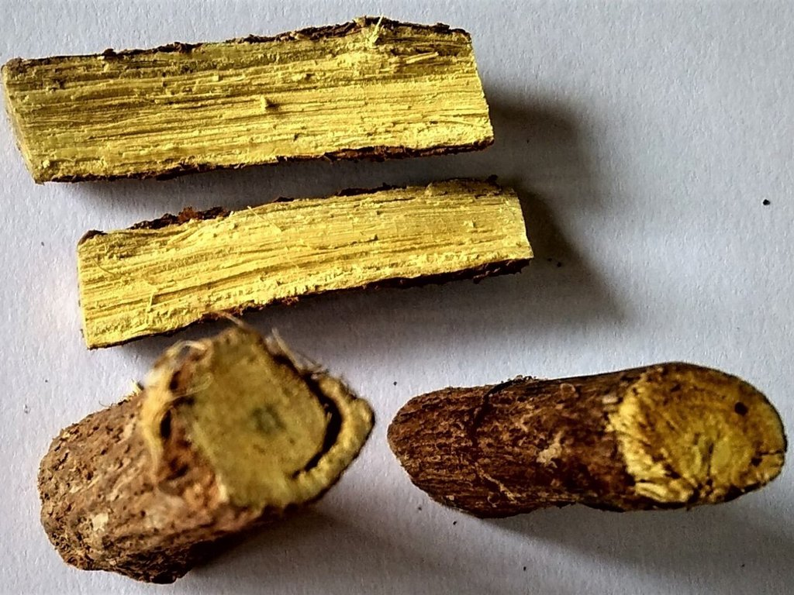

Cikk · Édesgyökér
Édesgyökér: a torkodnak jó lehet, a vérnyomásodnak nem
Biztos ettél már medvecukrot, vagy ittál olyan teát, amiben édesgyökér volt. Én is szeretem azt a fura, édes ízt. Most utánanéztem, mit tud róla a kutatás, és meglepődtem: a torokfájásra van rá némi jel, de a nagyobb gond az, hogy sok belőle a vérnyomásodat is felviheti.

Mi ez, és mire árulják?
Az édesgyökér egy évelő növény gyökere, Európában, Ázsiában és a Közel-Keleten termesztik. Cukorkát, ételeket, sőt dohánytermékeket is ízesítenek vele. Érdekesség, hogy sok „édesgyökeres” édességben valójában nincs is édesgyökér, csak ánizsolaj, ami hasonló illatú és ízű.
Régen köhögésre, asztmára, sebekre, máj- és tüdőbajokra használták. Ma az emésztésre, a légutakra és az energiára ajánlják étrend-kiegészítőként, a bőrre pedig krémként. Átolvastam az amerikai NIH komplementer és integratív egészségügyi központjának (NCCIH) lapját, amelyet 2025 áprilisában frissítettek.
Mit mond a NIH?
Amit a lap ír Készültek vizsgálatok emberekkel, de egyik betegségre sincs elég jó minőségű bizonyíték ahhoz, hogy egyértelműen ajánlani lehessen.
Ahol van némi jel Visszatérő szájfekélynél az édesgyökeres szájöblítő csökkentheti a fekély méretét és a fájdalmat. Műtét előtt, ha altatáshoz csövet vezetnek a légcsőbe, az édesgyökeres gargarizálás vagy szopogató tabletta enyhítheti az utána jelentkező torokfájást.
Amire kevés az adat Nem tudni, hogy önmagában segít-e emésztési panaszokra. Ekcémára, égésre és szájszagra csak előzetes adatok vannak, a COVID-19 ellen pedig nincs rá jó bizonyíték.
Amire figyelj
Ételként, ízesítőként általában biztonságosnak tartják. A gond a glicirrizinnel van, ami az édesgyökér egyik összetevője. Nagy mennyiségben vagy hosszan szedve szabálytalan szívverést, akár szívmegállást is okozhat. A NIH szerint már kis mennyiség is súlyos bajt okozott olyanoknál, akik sok sót esznek, magas a vérnyomásuk, vagy szív- vagy vesebetegek.
Egy 2024-es svéd vizsgálatban 28 fiatal, egészséges önkéntes két hétig naponta olyan adag édesgyökeret evett, amiben 100 mg glicirrizin volt. Ezt korábban biztonságosnak gondolták, mégis átlagosan 3,1 Hgmm-rel nőtt a felső vérnyomásuk otthon mérve. A kutatók szerint az édesgyökér erősebb, mint eddig hitték.
Van glicirrizinmentes változata is (a dobozon DGL rövidítéssel szokott szerepelni), ezt szájon át legfeljebb négy hónapig valószínűleg biztonságos szedni. A bőrre kenve rövid ideig valószínűleg rendben van, de egyeseknél irritálhat. Ha szteroidos gyógyszert szedsz, szólj az orvosodnak, mert kölcsönhatást is leírtak. Terhesség alatt a nagy mennyiség kifejezetten veszélyes, mert növeli a korai szülés kockázatát.
Szerintem egy-egy édesgyökeres cukorka vagy tea belefér. De ha magas a vérnyomásod, és naponta ropogtatod, érdemes elgondolkodni rajta, és szólni az orvosodnak.
Források
- National Center for Complementary and Integrative Health, NIH. Licorice Root. Frissítve: 2025. április. https://www.nccih.nih.gov/health/licorice-root
- Af Geijerstam P, Joelsson A, Rådholm K, Nyström FH. A low dose of daily licorice intake affects renin, aldosterone, and home blood pressure in a randomized crossover trial. Am J Clin Nutr. 2024;119(3):682-691. PubMed 38246526
- Kuriyama A, Maeda H. Topical application of licorice for prevention of postoperative sore throat in adults: a systematic review and meta-analysis. J Clin Anesth. 2019;54:25-32. https://doi.org/10.1016/j.jclinane.2018.10.025 · PubMed 30391446